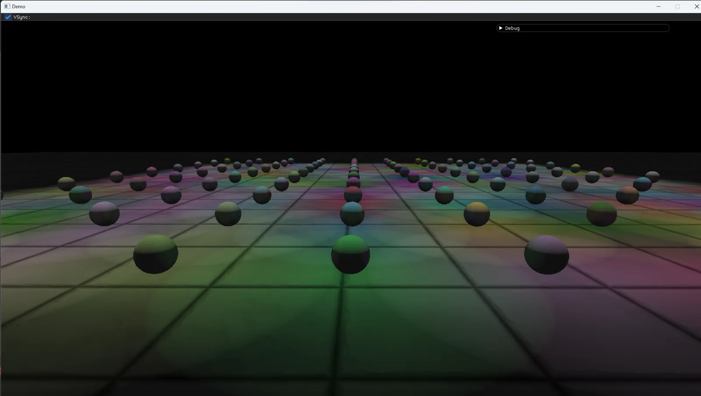
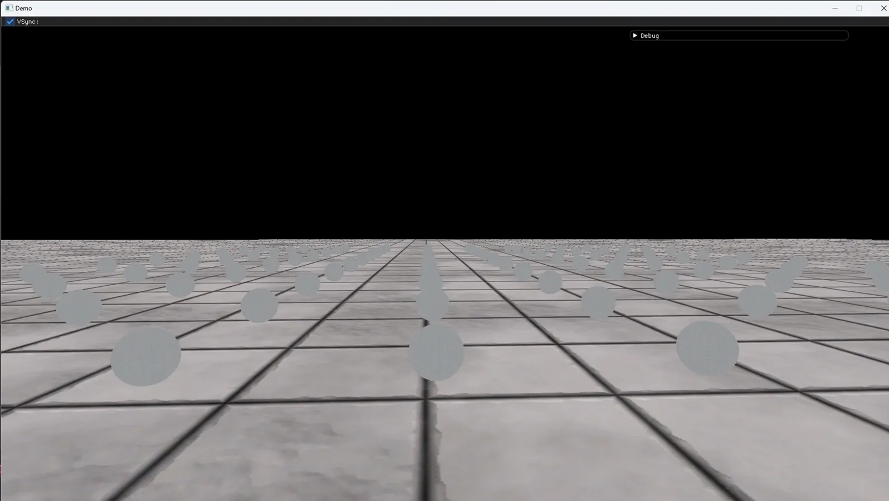
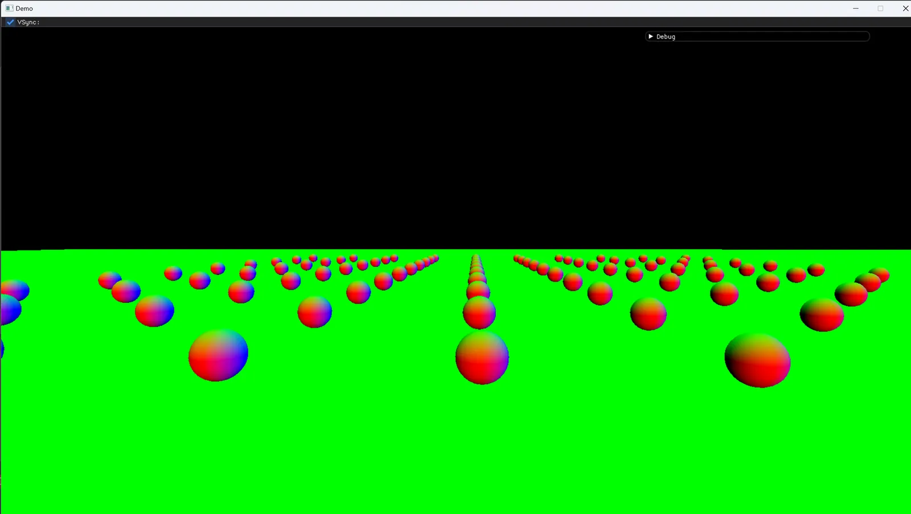
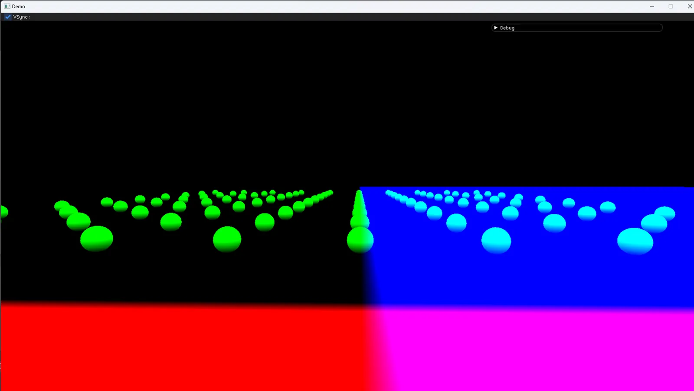
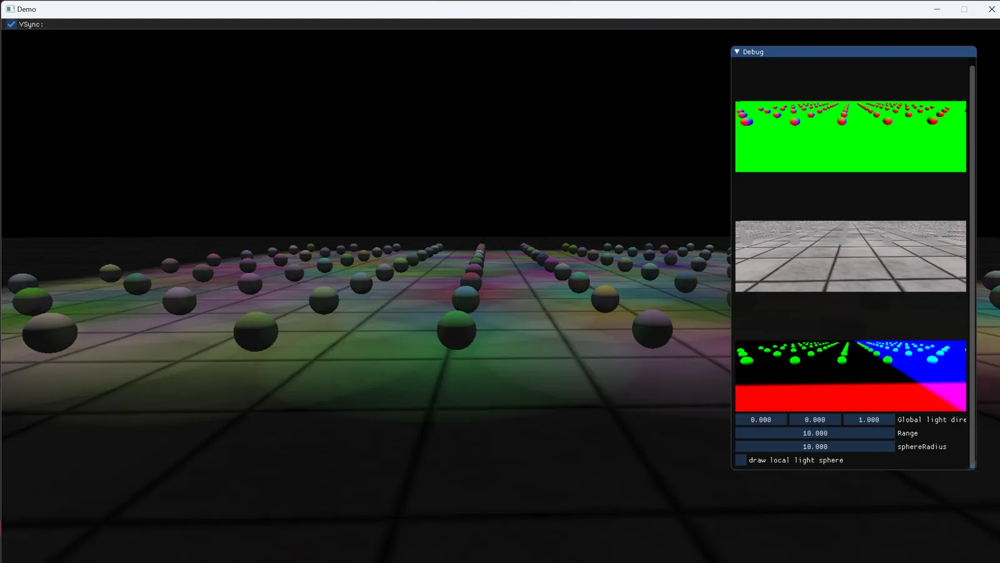

Deferred Shading
Independent project | C++, Direct3D 11, ImGui 2023
Implemented deferred shading with three G-buffers (position, normal and diffuse), supporting up to 2,000 local lights. The scene shown uses 100 local lights and 1 global light.
Full-screen views of each G-buffer were added for debugging, and the final output shows the G-buffers in an ImGui window.




